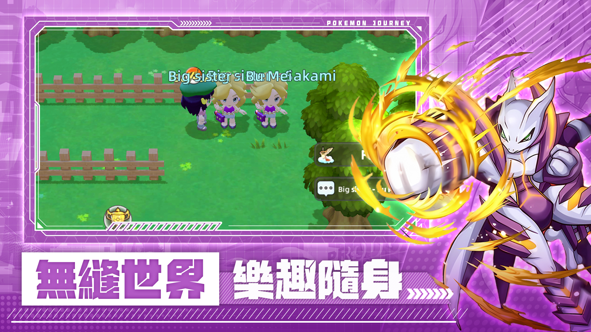

新手起步
完成教學後先確認下載版本、帳號綁定與禮包碼兌換入口。初期資源應投入主線推進、核心精靈等級與技能開放，不建議過早分散培養。
建議順序：下載遊戲 → 兌換禮包碼 → 選初始精靈 → 推主線 → 開始補圖鑑。
先領兌換碼，再穩定推進新手路線；先決定收藏目標，再配置對戰資源。這份攻略以港澳台玩家常見問題重排。

完成教學後先確認下載版本、帳號綁定與禮包碼兌換入口。初期資源應投入主線推進、核心精靈等級與技能開放，不建議過早分散培養。
按1-9世代建立清單，方便追蹤御三家與稀有形態。
優先補齊可形成完整隊伍定位的進化鏈。
定期查看文章與兌換碼頁，避免錯過限時資源。
收藏與對戰可分成兩套思路。收藏隊重視完成度；對戰隊則看速度、輸出、防守、干擾與回復。資源不足時，先集中培養一隊能穩定通關的主力。
對戰不要只看戰力數字。屬性克制、技能冷卻、上場順序、多人對戰分工都會影響結果。面對高壓對手時，先保住核心輸出，再用控制或屬性轉換創造反擊窗口。
太晶化適合改變屬性、補弱點或提高關鍵技能威力；Mega進化適合在爆發回合拉高上限。兩者都應配合隊伍節奏，不宜看到按鈕就立即使用。
閱讀太晶化詳解